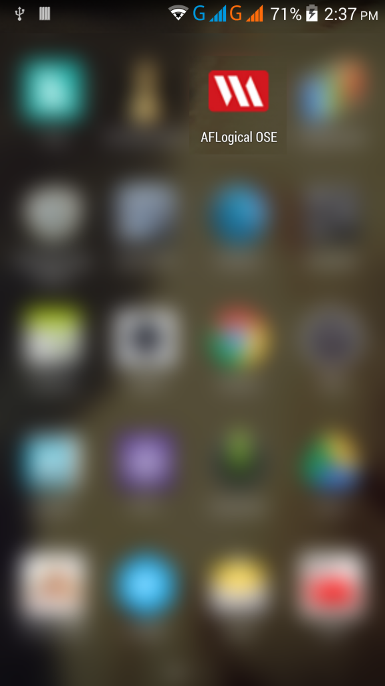
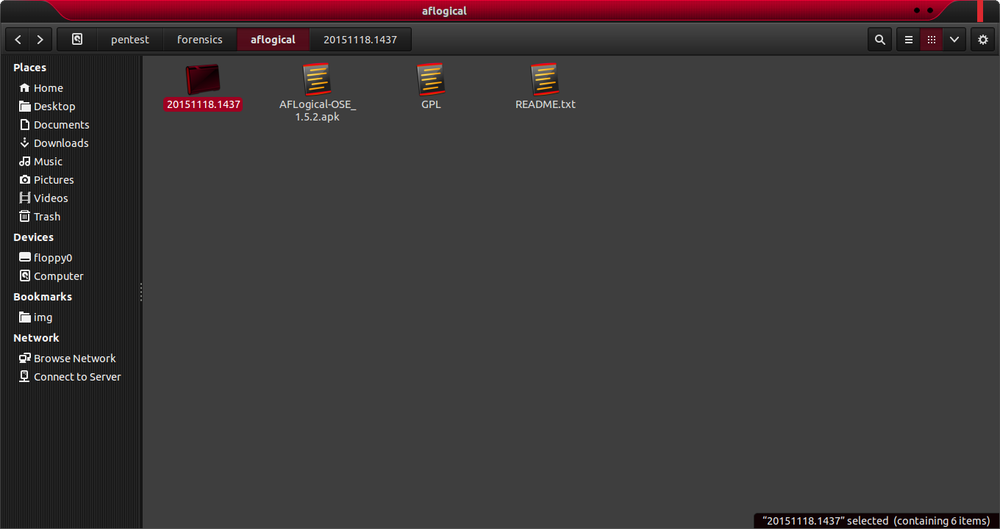
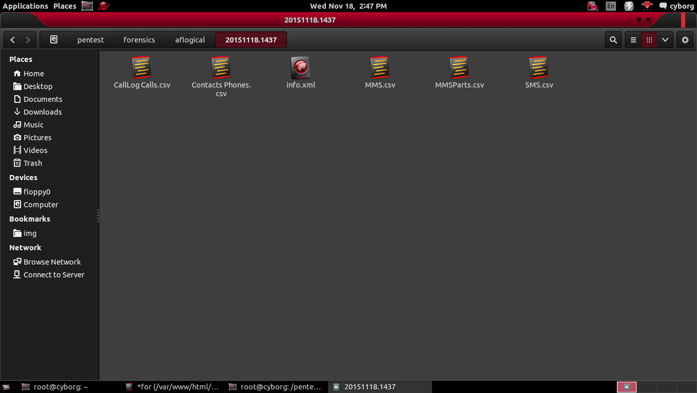

AFLogical Open Source Edition was released in December 2011 and is now hosted on GitHub (can be cloned with git ). The app provides a basic framework for extracting data from Android devices using Content Providers and then saves the data to the SD Card of the device including:
Contacts
Call Logs
SMS
MMS
MMS Parts
Device info
Example
cyborg@cyborg:~$ sudo aflogical
connect your device and run here 'adb devices'
after successful connecting your device run here 'adb install AFLogical-OSE_1.5.2.apk'
Run ‘ADB DEVICES’ after connecting device :
root@cyborg:/pentest/forensics/af logical# adb devices
List of devices attached
0123456789ABCDEF device
If Device connected , Run :
root@cyborg:/pentest/forensics/af logical# adb install AFLogical-OSE_1.5.2.apk
545 KB/s (28794 bytes in 0.051s)
pkg: /data/local/tmp/AFLogical-OSE_1.5.2.apk
Success
This will install APK to connected Device :
AFLogical Open Source Edition AFLogical Open Source Edition
Open App :

aflogical extracted AFLogical Open Source Edition
Click on Capture :

aflogical extract AFLogical Open Source Edition
Pull and examine the extracted data:
root@cyborg:/pentest/forensics/af logical# adb pull /mnt/sdcard/forensics
pull: building file list...
pull: /mnt/sdcard/forensics/20151118.1437/Contacts Phones.csv -> ./20151118.1437/Contacts Phones.csv
pull: /mnt/sdcard/forensics/20151118.1437/CallLog Calls.csv -> ./20151118.1437/CallLog Calls.csv
pull: /mnt/sdcard/forensics/20151118.1437/SMS.csv -> ./20151118.1437/SMS.csv
pull: /mnt/sdcard/forensics/20151118.1437/MMSParts.csv -> ./20151118.1437/MMSParts.csv
pull: /mnt/sdcard/forensics/20151118.1437/MMS.csv -> ./20151118.1437/MMS.csv
pull: /mnt/sdcard/forensics/20151118.1437/info.xml -> ./20151118.1437/info.xml
6 files pulled. 0 files skipped.
478 KB/s (308754 bytes in 0.630s)
New Folder with has been Created :
root@cyborg:/pentest/forensics/af logical# ls
20151118.1437 AFLogical-OSE_1.5.2.apk GPL README.txt
Open With Nautilus :
root@cyborg:/pentest/forensics/af logical# nautilus
aflogical file view AFLogical Open Source Edition
Open Folder :
